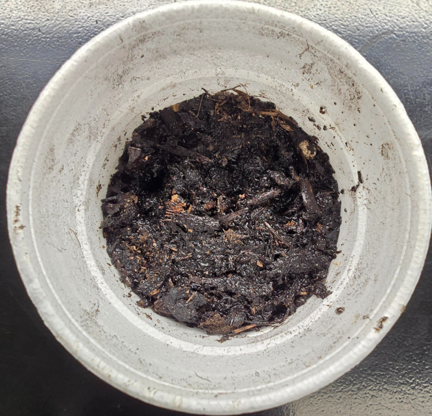
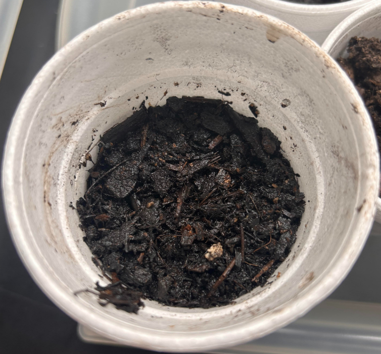

[ DATA_POINTS ]
| HEIGHT: | N/A |
| LEAF_COUNT: | N/A |
| WATER_GIVEN: | 30-50ml/d |
| LIGHT_EXPOSURE: | 24H |
[ FIELD_JOURNAL ]
The plant didn't show any signs of visible growth this week. We watered it daily with about 30-50ml hoping for the best over the weekend. The day before the weekend, I was worried that we hadn't watered it enough and that it might die, but I was soon proven wrong...
[ WEEKLY_LOG_GALLERY ]
MON

TUE

WED

THU

FRI
SAT
SUN